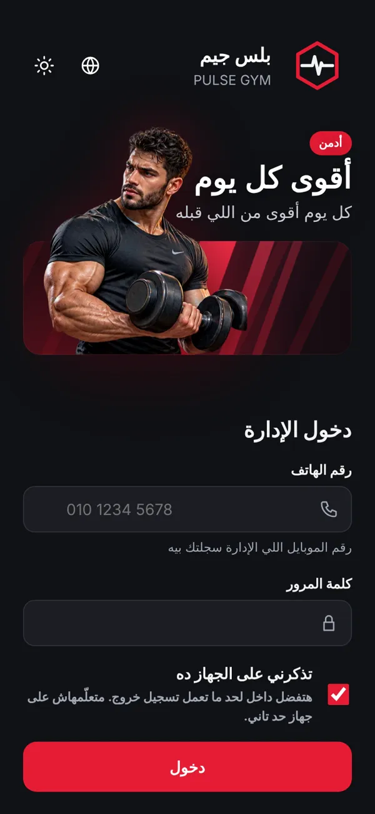

5 مرات
الخطوة 1
دخول الإدارة من الباب السري
شاشة الدخول العادية للمشتركين. دخول الإدارة مستخبي عشان محدش من المشتركين يشوفه.
- دوس على شعار الجيم اللي فوق 5 مرات ورا بعض — هتظهر شاشة «دخول الإدارة».
- اكتب رقم موبايلك وكلمة السر اللي استلمتهم من urcod، وعلّم «تذكرني على الجهاز ده».
- اكتب رمز الدخول (4 أرقام).
كلمة السر والرمز ليك إنت بس. متبعتهمش لحد ولا تكتبهم في شات — حتى لينا.